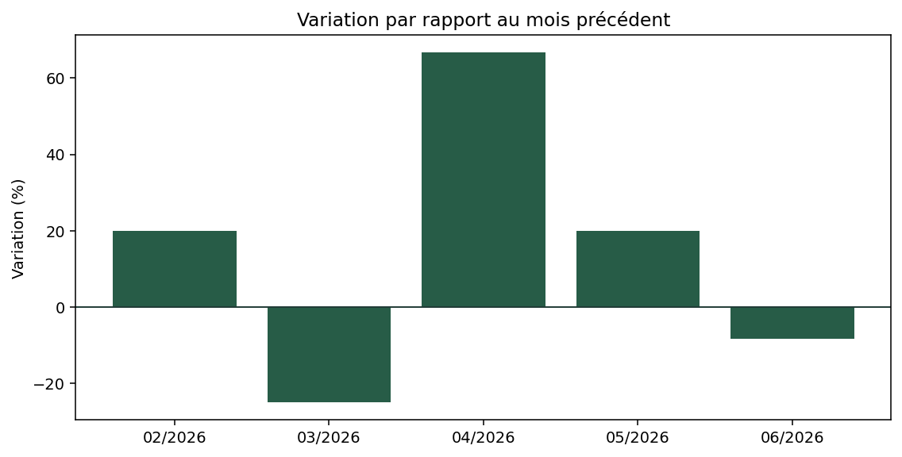
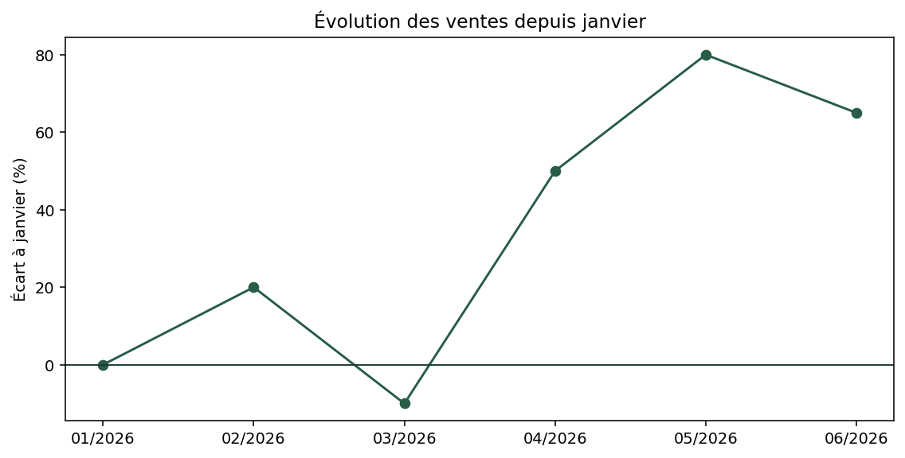
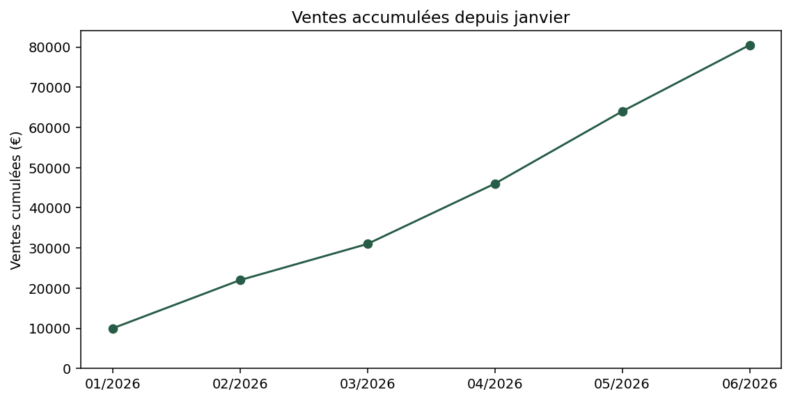
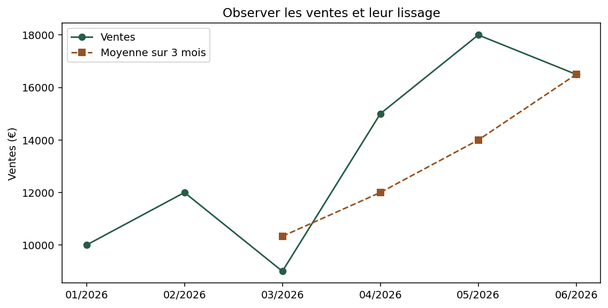
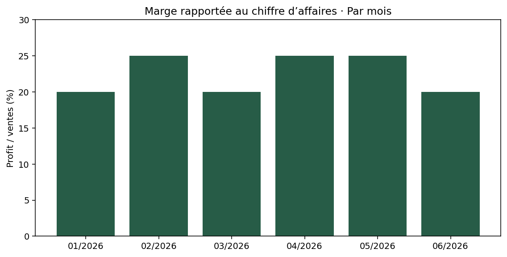

Distinguer les indicateurs en les calculant, en les traçant et en les confrontant aux chiffres.
Bases déjà acquisesExemple → exercice → correction collectiveQCM avec feedback
Bloc 02 / Introduction
Introduction
Objectif
Calculer un indicateur, choisir sa représentation et l’interpréter avec la bonne référence. Nous réutilisons Figure, Axes, les titres et les exports du bloc 1.
Résumé général
La part du total a été vue au bloc 1. Nous distinguons maintenant variation mensuelle, évolution depuis janvier, somme cumulée, moyenne mobile et marge rapportée au chiffre d’affaires.
Un second scénario fictif.
Les six mois ci-dessous ne proviennent pas du CSV de janvier : son total et sa période sont différents et il n’a pas de colonne profit. Ce petit tableau indépendant sert à vérifier les calculs à la main, dans le même projet de carnet commercial.
Ouvrez notebooks/02_indicateurs.ipynb. Une ligne représente un mois ; le calendrier est complet et toutes les ventes sont strictement positives.
DataFrame crée la petite table. date_range produit les six débuts de mois (MS). sort_values impose l’ordre chronologique ; reset_index renumérote les lignes ; strftime prépare des étiquettes mois/année. Les ventes et profits restent numériques.
Figure obtenue avec les données et le code du cours.
Bloc 02 / Variation mensuelle
Que s’est-il passé depuis le mois précédent ?
Variation = (valeur actuelle / valeur précédente − 1) × 100. En février : (12 000 / 10 000 − 1) × 100 = +20 %. Le dénominateur change chaque mois.

Figure obtenue avec les données et le code du cours.
Python · sandbox-notebook
df["variation_pct"] = df["ventes"].pct_change() * 100
print(df["variation_pct"].round(2))
fig, ax = plt.subplots(figsize=(8, 4), layout="constrained")
ax.bar(mois, df["variation_pct"], color="#275c47")
ax.axhline(0, color="#203b36", linewidth=1)
ax.set_title("Variation par rapport au mois précédent")
ax.set_ylabel("Variation (%)")
fig.savefig("/workspace/resultats/02_variation.png", dpi=140, bbox_inches="tight")
plt.show()
Figure obtenue avec les données et le code du cours.
Lecture du code et résultat
pct_change() compare chaque ligne à la précédente et renvoie une fraction ; multiplier par 100 donne un pourcentage. Janvier vaut NaN faute de mois précédent : ce n’est pas 0 %. bar dessine des barres verticales et axhline(0) marque la séparation entre hausse et baisse.
Petit exercice 01
Expliquer la baisse de mars
Objectif : Expliquer la baisse de mars Prérequis : Exemple juste au-dessus.
Calculez à la main la variation de mars, puis vérifiez la ligne correspondante. Quel est le dénominateur ? Interprétez la barre négative.
Livrable : Un calcul et une phrase. Critères de réussite : −25 %, calculé par rapport aux 12 000 € de février.
Travaillez sur les données fournies, sans saisir les résultats attendus à la place du calcul.
Indice 1
Comparez 9 000 à 12 000.
Indice 2
(9000 / 12000 - 1) * 100.
On corrige ensemble
Comparez vos choix, vérifiez le résultat, puis formulez une observation avant de passer à la suite.
Évolution depuis l’origine = (valeur actuelle / valeur initiale − 1) × 100. En mars : (9 000 / 10 000 − 1) × 100 = −10 %. La référence est toujours janvier.

Figure obtenue avec les données et le code du cours.
Python · sandbox-notebook
df["evolution_pct"] = (df["ventes"] / df["ventes"].iloc[0] - 1) * 100
fig, ax = plt.subplots(figsize=(8, 4), layout="constrained")
ax.plot(mois, df["evolution_pct"], marker="o", color="#275c47")
ax.axhline(0, color="#203b36", linewidth=1)
ax.set_title("Évolution des ventes depuis janvier")
ax.set_ylabel("Écart à janvier (%)")
fig.savefig("/workspace/resultats/02_evolution.png", dpi=140, bbox_inches="tight")
plt.show()
Figure obtenue avec les données et le code du cours.
Lecture du code et résultat
iloc[0] prend la première valeur après le tri chronologique. plot relie les mois ; marker rend chaque observation visible. Janvier vaut 0 % car il se compare à lui-même. Cette évolution est parfois dite cumulée : elle ne consiste pas à additionner les variations mensuelles.
Petit exercice 02
Deux constats sur juin
Objectif : Deux constats sur juin Prérequis : Exemple juste au-dessus.
Retrouvez la variation de juin par rapport à mai et son évolution depuis janvier. Formulez une phrase qui contient les deux sans contradiction.
Livrable : Deux valeurs et une phrase. Critères de réussite : Environ −8,33 % sur le mois et +65 % depuis janvier.
Travaillez sur les données fournies, sans saisir les résultats attendus à la place du calcul.
Indice 1
Les références sont 18 000 et 10 000.
Indice 2
Une baisse récente peut coexister avec un niveau supérieur au point de départ.
On corrige ensemble
Comparez vos choix, vérifiez le résultat, puis formulez une observation avant de passer à la suite.
La somme cumulée additionne les montants depuis janvier jusqu’au mois observé. Fin mars : 10 000 + 12 000 + 9 000 = 31 000 €. L’unité est l’euro, pas le pourcentage.

Figure obtenue avec les données et le code du cours.
Figure obtenue avec les données et le code du cours.Comparer avec les montants mensuels. Les deux graphiques ont leurs propres échelles : lire les axes, pas seulement la hauteur des points.
Mois
Ventes (€)
Variation mensuelle
Évolution / janvier
Cumul (€)
Janvier
10 000
—
0 %
10 000
Février
12 000
+20 %
+20 %
22 000
Mars
9 000
−25 %
−10 %
31 000
Avril
15 000
+66,67 %
+50 %
46 000
Mai
18 000
+20 %
+80 %
64 000
Juin
16 500
−8,33 %
+65 %
80 500
Lecture du code et résultat
cumsum() conserve une somme progressive dans l’ordre des lignes. Ici, les ventes sont toutes positives : le cumul augmente même quand le montant du mois diminue. Avec des montants nets négatifs, cette propriété ne serait plus garantie.
Petit exercice 03
Auditer une conclusion
Objectif : Auditer une conclusion Prérequis : Exemple juste au-dessus.
On lit : « Le cumul augmente en juin, donc les ventes de juin sont supérieures à celles de mai. » Corrigez cette phrase avec les trois montants utiles.
Livrable : Une conclusion corrigée et les chiffres qui la prouvent. Critères de réussite : 16 500 € en juin contre 18 000 € en mai ; cumul de 80 500 €.
Travaillez sur les données fournies, sans saisir les résultats attendus à la place du calcul.
Indice 1
Distinguez le montant du mois et celui depuis janvier.
Indice 2
Le cumul de mai vaut 64 000 €. Juin y ajoute 16 500 €.
On corrige ensemble
Comparez vos choix, vérifiez le résultat, puis formulez une observation avant de passer à la suite.
Une moyenne mobile sur trois mois calcule la moyenne du mois courant et des deux précédents. Pour mars : (10 000 + 12 000 + 9 000) / 3 = 10 333,33 €.

Figure obtenue avec les données et le code du cours.
Python · sandbox-notebook
df["moyenne_mobile"] = df["ventes"].rolling(3).mean()
fig, ax = plt.subplots(figsize=(8, 4), layout="constrained")
ax.plot(mois, df["ventes"], marker="o", label="Ventes", color="#275c47")
ax.plot(mois, df["moyenne_mobile"], marker="s", linestyle="--",
label="Moyenne sur 3 mois", color="#945324")
ax.set_title("Observer les ventes et leur lissage")
ax.set_ylabel("Ventes (€)")
ax.legend()
fig.savefig("/workspace/resultats/02_moyenne_mobile.png", dpi=140, bbox_inches="tight")
plt.show()
Figure obtenue avec les données et le code du cours.
Lecture du code et résultat
rolling(3).mean() utilise trois lignes : elles correspondent ici à trois mois consécutifs. Par défaut, il faut trois valeurs ; les deux premiers résultats sont NaN. Deux appels à plot ajoutent deux séries au même Axes. label et legend les identifient ; les marqueurs et tirets complètent la couleur. Un lissage décrit le passé, ce n’est pas une prévision.
Petit exercice 04
Vérifier la moyenne d’avril
Objectif : Vérifier la moyenne d’avril Prérequis : Exemple juste au-dessus.
Calculez la moyenne mobile d’avril à la main, puis vérifiez avec pandas. Expliquez pourquoi les deux premières valeurs ne doivent pas être remplacées par zéro.
Livrable : Un calcul et une explication. Critères de réussite : 12 000 € : moyenne de février, mars et avril.
Travaillez sur les données fournies, sans saisir les résultats attendus à la place du calcul.
Indice 1
La fenêtre se déplace avec le mois courant.
Indice 2
(12000 + 9000 + 15000) / 3.
On corrige ensemble
Comparez vos choix, vérifiez le résultat, puis formulez une observation avant de passer à la suite.
Ici, profit est un montant fictif fourni par mois. Nous nommons précisément l’indicateur : profit / ventes, ou marge rapportée au chiffre d’affaires. Ce n’est pas une marge divisée par un coût d’achat.
En février : 3 000 / 12 000 × 100 = 25 %. Pour le semestre : somme des profits / somme des ventes × 100 = 18 350 / 80 500 × 100 ≈ 22,80 %.

Figure obtenue avec les données et le code du cours.
Python · sandbox-notebook
df["marge_pct"] = df["profit"] / df["ventes"] * 100
marge_globale = df["profit"].sum() / df["ventes"].sum() * 100
print("Marge sur CA du semestre :", round(marge_globale, 2), "%")
fig, ax = plt.subplots(figsize=(8, 4), layout="constrained")
ax.bar(mois, df["marge_pct"], color="#275c47")
ax.set_title("Marge rapportée au chiffre d’affaires · Par mois")
ax.set_ylabel("Profit / ventes (%)")
ax.set_ylim(0, 30)
fig.savefig("/workspace/resultats/02_marge.png", dpi=140, bbox_inches="tight")
plt.show()
Figure obtenue avec les données et le code du cours.
Lecture du code et résultat
La division de colonnes calcule le taux de chaque mois. Le ratio des deux sommes calcule le taux global ; chaque mois y pèse selon son chiffre d’affaires. mean() sur les taux donne le même poids à chaque mois : la question traitée est différente.
Petit exercice 05
Le taux depuis janvier
Objectif : Le taux depuis janvier Prérequis : Exemple juste au-dessus.
Calculez profit cumulé / ventes cumulées × 100, puis tracez cette série. Comparez son dernier point à la moyenne des taux mensuels. Justifiez la formule retenue pour la marge globale.
Livrable : Une courbe, deux valeurs et une justification. Critères de réussite : Dernier ratio ≈ 22,80 % ; moyenne des taux = 22,50 %.
Travaillez sur les données fournies, sans saisir les résultats attendus à la place du calcul.
Indice 1
Appliquez cumsum() au numérateur et au dénominateur.
Indice 2
Réutilisez plot et les labels des exemples précédents.
On corrige ensemble
Comparez vos choix, vérifiez le résultat, puis formulez une observation avant de passer à la suite.
La responsable demande si la baisse récente est compatible avec une bonne progression depuis janvier, et si le total de ventes révèle à lui seul la marge. Choisissez vos indicateurs avant d’ouvrir le graphique.
Petit exercice 06
Une restitution en trois phrases
Objectif : Une restitution en trois phrases Prérequis : Exemple juste au-dessus.
Choisissez deux graphiques déjà construits. Formulez un constat chiffré sur juin, un constat sur le semestre et une limite. Expliquez pourquoi un seul cumul ne répond pas à toutes les questions.
Livrable : Deux graphiques du carnet et trois phrases. Critères de réussite : Références et unités explicites ; pas de prévision ni de causalité inventée.
Travaillez sur les données fournies, sans saisir les résultats attendus à la place du calcul.
Indice 1
Combinez variation mensuelle, évolution depuis janvier et marge globale.
Indice 2
Une courbe de ventes cumulées ne contient aucune information sur les coûts ou le profit.
On corrige ensemble
Comparez vos choix, vérifiez le résultat, puis formulez une observation avant de passer à la suite.
Contexte et utilisateurs : une responsable commerciale veut des graphiques pour comparer les ventes et suivre des indicateurs. Chaque figure doit répondre à une question et pouvoir être reproduite.
Organisation : les données alimentent pandas ; les Series et DataFrames préparent les mesures ; Matplotlib produit les Figures ; les notebooks conservent les raisonnements ; resultats accueille les PNG.
Jalon
Production vérifiable
Erreur à repérer
Bloc 1
Barres par région et parts du total ; unités et dénominateur explicites.
Confondre lignes et commandes ou désassocier noms et montants.
Bloc 2
Courbes et barres des indicateurs ; commentaire sur juin et sur le semestre.
Confondre variation, cumul et moyenne des taux.
Livrables : vos deux carnets complétés, les figures des exercices et vos interprétations. Validation : mêmes résultats après redémarrage du noyau, références nommées et limites reconnues.
Cas d’usage professionnel : une équipe commerciale peut partager ces images dans un rapport. Le contrôle des mesures rend les comparaisons vérifiables ; la figure ne démontre pas les causes d’une hausse ou d’une baisse.
Extension facultative : refaire la comparaison des catégories sur une seule région, en précisant le filtre et le nouveau total.
Bloc 02 / Passerelle facultative
Retrouver la logique dans Power BI.
Ce repère est facultatif : aucun exercice Power BI n’est requis pour terminer les blocs Matplotlib. On transfère le raisonnement, pas une traduction automatique de chaque ligne Python.
Question / pandas
Repère Power BI
Somme : sum()
SUM, avec le contexte de filtre du modèle.
Variation : pct_change()
Comparer la période courante à la précédente sur un calendrier défini.
Évolution depuis l’origine
Choisir explicitement la période de référence et diviser les valeurs.
Cumul : cumsum()
RUNNINGSUM pour un calcul visuel.
Lissage : rolling(3).mean()
MOVINGAVERAGE pour un calcul visuel ; vérifier l’ordre et les premières fenêtres.
Part du total
Définir le total de référence et son contexte de filtre.
Marge sur CA : ratio des sommes
DIVIDE entre la somme des profits et celle des ventes.
RUNNINGSUM et MOVINGAVERAGE sont des fonctions de calcul visuel : leur résultat dépend des lignes, de l’ordre et des réinitialisations du visuel. Ce ne sont pas des mesures interchangeables avec les colonnes pandas. Vérifiez aussi les périodes absentes et le traitement des fenêtres incomplètes.
Marge sur CA Somme des profits / somme des ventes.
Interprétation Nommer unité, référence et limite.
Erreurs fréquentes
Calculer sur des mois désordonnés ; sommer des pourcentages de variation ; remplacer les NaN par zéro ; diviser par zéro ; moyenner des taux pour obtenir le ratio global.
Dans notre tableau les dénominateurs sont positifs. Avec une référence ou un total nul, le ratio est indéfini : il faut le signaler, pas inventer 0 %. Avec des mois absents, vérifier le calendrier avant pct_change ou rolling.
Questions de révision
Pourquoi mars vaut-il −25 % et −10 % selon la référence ?
Pourquoi janvier est-il NaN pour la variation et 0 % pour l’évolution ?
Pourquoi un cumul peut-il monter pendant une baisse mensuelle ?
Que signifie rolling(3) si un mois manque ?
Pourquoi le ratio global diffère-t-il de la moyenne des taux ?
Quelles vérifications faire avant d’interpréter un graphique ?
Résumé final
Un indicateur dépend de son dénominateur et de son périmètre. Variation, évolution et cumul répondent à des questions différentes. Le lissage décrit le passé ; le ratio de sommes mesure la marge globale sur CA. Confrontez chaque graphique aux chiffres avant de conclure.
Fin du bloc 02
QCM avec feedback
Choisissez une réponse, puis lisez son explication avant de poursuivre.